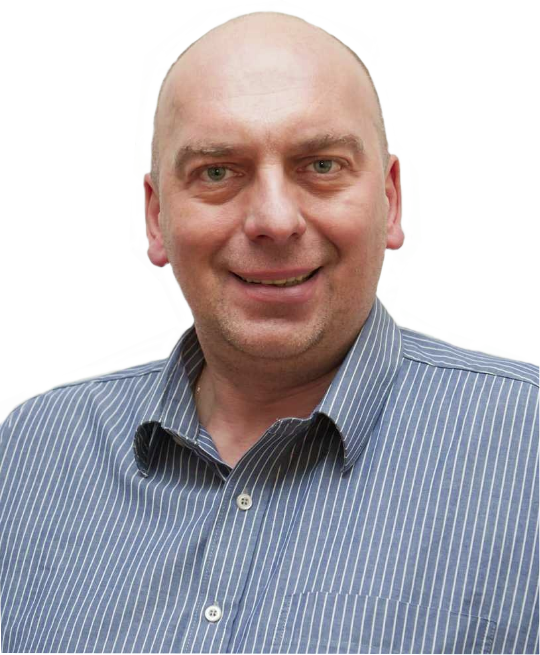

mgr Artur Tebień
Jestem pedagogiem, terapeutą uzależnień ( w trakcie certyfikacji PARPA). Certyfikowanym Mediatorem
Sadowym
wpisanym na listę Mediatorów Sadu Okręgowego w Krakowie Ukończyłem studia magisterskie o
specjalizacji
Pedagogika Resocjalizacyjna i Sądowa ,oraz profilaktyka na Uniwersytecie Jana Kochanowskiego w
Kielcach.
Skończyłem Studium Pomocy Psychologicznej i Interwencji Kryzysowej (I i II stopień) w Instytucie
Psychologii
Zdrowia w Warszawie, uzyskując certyfikat specjalisty pomocy i interwencji psychologicznej, w
Warszawie
.
Swoje umiejętności doskonaliłem pracując w Punkcie konsultacyjnym Urzędu Miasta i Gminy Wieliczka
ul.
Pocztowa 1 . W charakterze realizatora Gminnego programu profilaktyki psychoterapeuty, konsultanta w
pisaniu
pism procesowych, prowadzenia indywidualnych spotkań o charakterze pomocy psychologicznej, . Przez 8
lat
przewodniczyłem pracy Gminnej Komisji Rozwiazywania Problemów Alkoholowych w gminie Wieliczka ( 56
000
mieszkańców) W Powiatowym Centrum Pomocy rodzinie w Wieliczce prowadzenia indywidualnych spotkań o
charakterze pomocy psychologicznej terapii par, praca w charakterze mediatora Sadowego( proces przed
rozwodowy pomocny w ustalaniu istotnych oczekiwań i zakresów ,podnoszonych na sali Sadu)
krótkotrwałą
indywidualna terapia z dziećmi młodzieżą i osobami dorosłymi Oraz w pracy pedagoga ,psychoterapeuty
indywidualnego , interwenta kryzysowego, w charakterze członka zespołu interwencyjnego w
Środowiskowym
Centrum Zdrowia Psychicznego w Wieliczce , jako prowadzać indywidualne spotkania interwencyjne bądź
o
charakterze pomocy psychologicznej Doświadczenie gromadziłem również pracując w Domu dziecka w
Pawlikowicach
,bądź w Pogotowiu Opiekuńczym w Skawinie W Środowiskowym Domu samopomocy w Wieliczce w charakterze
terapeuty
zajęciowego z klientami chorującymi psychicznie W świetlicy socjoterapeutycznej Przystań w
Niepołomicach
w
charakterze terapeuty dzieci i młodzieży bądź jako konsultant wychowawca wolontariusz Świetlicy
terapeutycznej w im świętej Kingi w Wieliczce oraz Przedszkolu Montesorek w Wieliczce. Koordynowałem
prace
Młodzieżowego Koła Wolontariatu w Wieliczce przy Urzędzie Miasta i Gminy Wieliczka jako koordynator
pracy i
wychowawca .
. Ponadto odbyłem szereg kursów i szkoleń podnoszących moje kwalifikacje, są to m.in.: , skończyłem
Studium
Pomocy Psychologicznej i Interwencji Kryzysowej (I i II stopień) w Instytucie Psychologii Zdrowia w
Warszawie, uzyskując certyfikat specjalisty pomocy i interwencji psychologicznej, Szkolenie
Mediatora
Sadowego.......Ukończyłem studia podyplomowe na Uniwersytecie Ekonomicznym w Krakowie jako
specjalista
Ekonomii Społecznej . Brałem udział w licznych konferencjach naukowych na rzecz pomocy dzieciom i
młodzieży
z autyzmem, niepełnosprawnością intelektualną i zaburzeniami rozwojowymi, uzależnieniach. Przez 8
lat
byłem
członkiem ZESPOLU Interdyscyplinarnego w Gminie Wieliczka w zakresie tworzenia procedur Niebieskiej
Karty (
przeciwdziałania przemocy w rodzinie, realizowania programu naprawczego.
Od 2008 roku pracuję zawodowo, w charakterze konsultanta terapeuty mediatora wychowawcy obecnie
prowadzę
prywatny gabinet interwenta kryzysowego( doświadczenie zdobyłem pracując w Policji w pionie
prewencji
przez
20 lat obecnie st aspirant w stanie spoczynku) oraz Przez 12 lat pracowałem jako Kurator społeczny
dla
dorosłych w Sadzie w Wieliczce
jestem w chwili obecnej zaangażowany w pomoc psychologiczna w zakresie studzenia emocji dot zakażeń
Korona
wirusem COViT 19 tak osób dorosłych jak i u dzieci tak za pośrednictwem mediów społecznościowych
telefonu
skypa jak i w indywidualnej rozmowie o charakterze wsparcia psychologicznego
zajmuję się przede wszystkim psychologiczną, poradnictwem i terapią dzieci, dorosłych młodzieży,
udzielam
wsparcia i wskazówek ich rodzinom. Prowadzę terapię dla dzieci nieśmiałych, grupę wsparcia dla
młodzieży.
Jestem członkiem W życiu prywatnym jestem mężem. Lubię podróże, wędrówki spacery ze swoim psem
labradorem
teatr, dobry film, muzykę i spotkania z ludźmi. W życiu stawiam przede wszystkim na rozwój osobisty,
odkrywanie tego co nieznane, podnoszenie swoich kompetencji i profesjonalną pomoc swoim pacjentom.
Cennik
- Poklepanie po ramieniu: 50 zł
- Dobre słowo: Pińcet zł
- Dobre słowo z poklepaniem po ramieniu: Pińcet plus
- Kop w dupe (dodaje kopa do pracy): Co łaska nie mniej niż 1000 zł